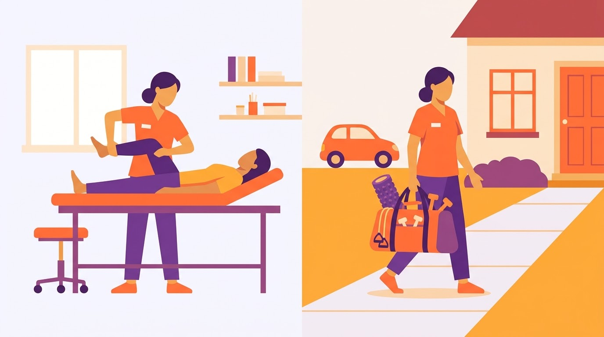
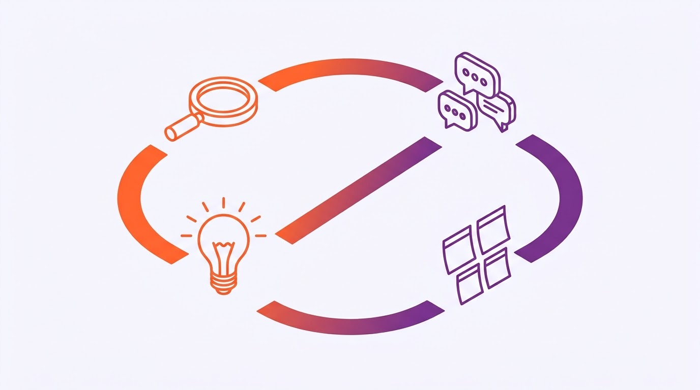
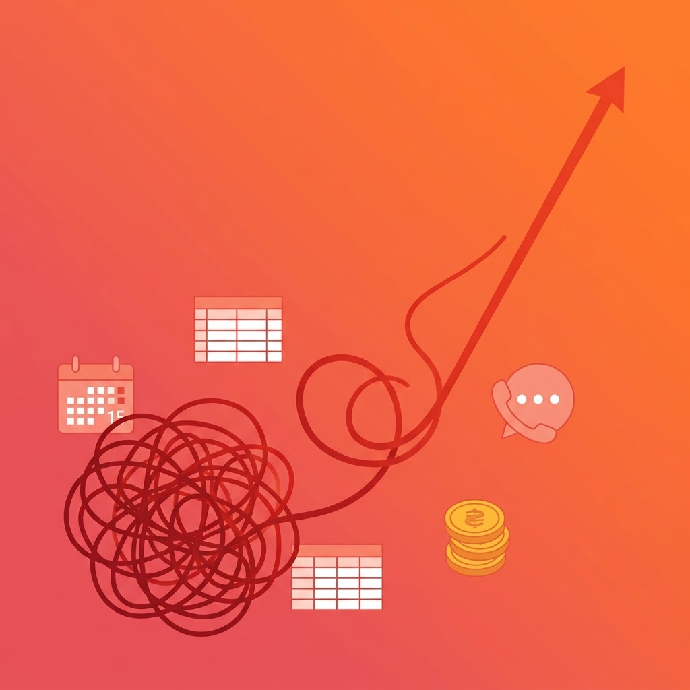
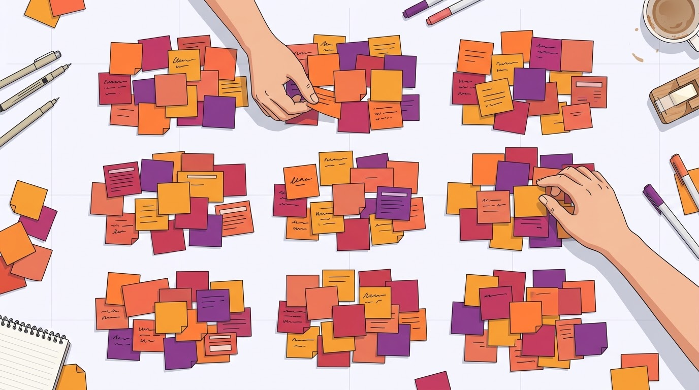
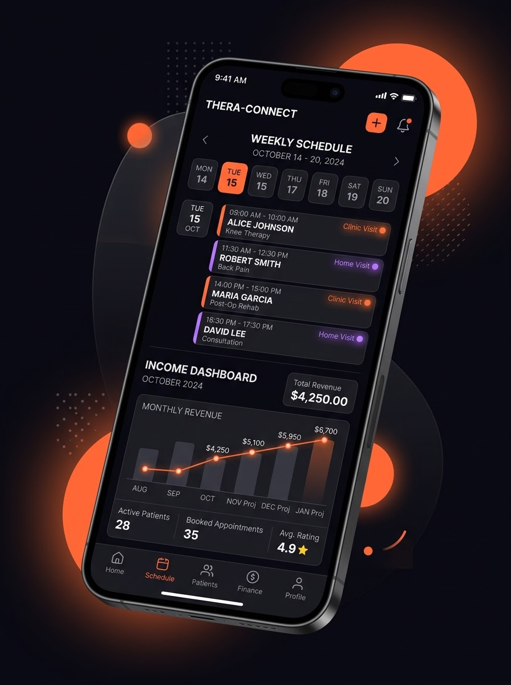

La Unidad 2 corresponde a la fase de generación de ideas del Ciclo de Innovación INACAP. Su aprendizaje esperado es proponer una idea innovadora y su propuesta de valor a partir del diagnóstico de necesidades de la usuaria y de las variables del contexto levantadas en la Unidad 1.

El desafío se mantiene sin cambios porque la UA1 lo validó con tres fuentes: la usuaria, una experta par (Catalina) y un asesor financiero. Sobre él se construyen todos los instrumentos de esta unidad.
La rúbrica ES02 pide integrar un enfoque sostenible en cada criterio. En este caso, sostenibilidad significa que la práctica independiente pueda mantenerse en el tiempo sin desgastar a la profesional ni al entorno:
Alineación con la Agenda 2030: ODS 3 (salud y bienestar), ODS 8 (trabajo decente y crecimiento económico) y ODS 13 (acción por el clima). Las etiquetas EcSoAm marcan esta lectura en referentes, requerimientos, ideas, atributos y métricas.

El equipo aplicó los instrumentos del toolkit UA2 en el orden del manual del estudiante (semanas 6 a 10). Cada instrumento usa como insumo el resultado del anterior; la tabla muestra la secuencia y el criterio de la rúbrica ES02 que respalda.
| Semana | Instrumento | Objetivo de aplicación | Criterio |
|---|---|---|---|
| S6 | 2.1.1.1 Ra-P-Rp | Evaluación diagnóstica: activar lo aprendido en Innovación y Emprendimiento II | Diagnóstica |
| S6 | 2.1.2.1 A/B Referentes | Inspirarse en soluciones de otros ámbitos y detectar tendencias | 2.1.2 |
| S7 | 2.1.3.1 – 2.1.3.3 Requerimientos | Perfil de usuaria, requerimientos, categorías y jerarquías | 2.1.3 |
| S7 | 2.1.4.1 – 2.1.4.2 Brainstorming | Generar 60 ideas y clasificarlas por originalidad y factibilidad | 2.1.1 · 2.1.4 |
| S7 | 2.1.4.3 Metáforas y atributos | Conceptualizar la idea seleccionada | 2.1.1 · 2.1.4 |
| S8 | 2.1.4.4 Propuesta de valor | Redactar la propuesta de valor y sus métricas claves | 2.1.4 |
| S6–S9 | Bitácora de avance | Planificar y registrar plazos, responsables y aprendizajes | 2.1.5 |
| S10 | Evaluación sumativa grupal | Este informe | 2.1.1 – 2.1.5 |
| Criterio | Qué se evalúa | % |
|---|---|---|
| 2.1.1 | Aplicar la generación de ideas con oportunidades detectadas, Ciclo INACAP y enfoque sostenible | 20 |
| 2.1.2 | Analizar casos existentes como inspiración, con enfoque sostenible | 20 |
| 2.1.3 | Definir requerimientos coherentes con el problema y la sostenibilidad | 20 |
| 2.1.4 | Sintetizar ideas y propuestas de valor con entorno, sostenibilidad y co-creación | 20 |
| 2.1.5 | Organizar el tiempo de forma planificada y realista, considerando múltiples dimensiones | 20 |
Se buscaron soluciones que resuelven en otro contexto un problema análogo al de la usuaria: capturar un dato sin esfuerzo, mostrar dinero de forma legible, cobrar sin fricción, sostener un hábito o aprovechar mejor los recursos. Cada ficha registra nombre, ámbito, descripción, aspectos relevantes, aplicación al desafío, lectura de sostenibilidad y fuente.
Descripciones basadas en la información pública de cada servicio a octubre de 2026. Agregar capturas de pantalla en el campo “Imagen” del tablero de trabajo.
● Resuelto · ◐ Parcial · ○ No resuelto — evaluación del equipo.
Las variables V1–V4 se derivan de los insights I1, I2, I3 y I6; V5 incorpora el enfoque sostenible exigido por la rúbrica.
| Caso | V1 | V2 | V3 | V4 | V5 | Tendencia |
|---|---|---|---|---|---|---|
| Uber Driver | ● | ◐ | ● | ◐ | ◐ | T1 · T6 |
| YNAB | ◐ | ● | ○ | ● | ● | T2 |
| Fintual | ◐ | ● | ○ | ◐ | ● | T2 |
| Mercado Pago | ● | ◐ | ● | ○ | ◐ | T1 · T6 |
| Smart Fit | ◐ | ○ | ● | ◐ | ◐ | T3 |
| Duolingo | ○ | ◐ | ○ | ● | ◐ | T4 |
| Strava | ● | ● | ○ | ● | ◐ | T1 · T4 |
| Google Maps | ● | ◐ | ◐ | ○ | ● | T5 |
| Too Good To Go | ○ | ○ | ● | ◐ | ● | T5 |
| SII · Propuesta de F22 | ● | ◐ | ◐ | ○ | ◐ | T2 |
| Oportunidad: Copiloto Kine | ● | ● | ● | ● | ● | T1–T6 |
| N° | Tendencia y casos | Lectura para el desafío |
|---|---|---|
| T1 | El dato se captura solo Uber · Mercado Pago · Strava · Google Maps | Cada atención realizada debe generar su registro sin digitar. EcSo |
| T2 | Dinero con propósito y proyección legible YNAB · Fintual · SII | Separar retención y colchón; proyectar en lenguaje cotidiano. Ec |
| T3 | Recurrencia que da estabilidad Smart Fit | Packs y membresías aplanan la curva estacional. Ec |
| T4 | Hábitos de segundos y comunidad Duolingo · Strava | El cierre diario debe durar segundos; la comunidad sostiene la adherencia. So |
| T5 | Eficiencia como sostenibilidad Google Maps · Too Good To Go | Menos kilómetros y horas vacías aprovechadas: ahorro y menor impacto. AmEc |
| T6 | Transparencia en tiempo real Uber · Mercado Pago | Ver la ganancia al instante genera confianza en la herramienta. Ec |
Relación con la UA1: los antecedentes del rubro (AgendaPro, Encuadrado, Cal.com, Nubox, entre otros) resolvían la agenda o la contabilidad por separado. Los referentes muestran cómo unirlas.

Joselyn atiende en dos contextos —el box de InMotion y los hogares de sus pacientes— y su oficina es el celular: WhatsApp para agendar, el calendario para los horarios y un Excel que se llena al final del día. El mapa de empatía ordena lo que piensa, ve, oye, dice, le duele y desea.
Cada insight priorizado en la UA1 se traduce en lo que la solución debe cumplir. Se clasifica el tipo de requerimiento y su aporte a la sostenibilidad.
| Insight (UA1) | Requerimiento de la solución | Tipo | Sost. |
|---|---|---|---|
| I2 La agenda es el origen del dato financiero | R1 Convertir cada cita confirmada en un ingreso proyectado, sin volver a digitarla. | Funcional | Ec |
| R2 Integrarse con la agenda que ya usa (Google Calendar, Cal.com, WhatsApp) en lugar de reemplazarla. | Negocio | EcAm | |
| R3 Distinguir el ingreso de clínica (comisión 70/30) del ingreso a domicilio. | Funcional | Ec | |
| I1 Ocupada no es lo mismo que rentable | R4 Mostrar la ganancia neta por atención, por semana y por mes. | Funcional | Ec |
| R5 Usar lenguaje no contable y una lectura de menos de 1 minuto desde el celular. | Experiencia | So | |
| I3 El Excel como parche diario | R6 Cerrar el día en menos de 30 minutos, idealmente con una confirmación de un toque por atención. | Experiencia | So |
| R7 Permitir el registro en el momento de la atención, no al final del día. | Experiencia | So | |
| I5 Los costos invisibles del domicilio | R8 Descontar por atención el traslado (km y combustible) y los materiales usados. | Funcional | Ec |
| R9 Sugerir agrupar los domicilios por sector para reducir los kilómetros. | Funcional | AmEc | |
| I6 Inestabilidad sin memoria | R10 Construir un historial y proyectar 3 a 6 meses considerando la estacionalidad. | Funcional | Ec |
| R11 Alertar los meses bajos con anticipación y sugerir acciones (packs, campañas). | Funcional | EcSo | |
| I4 Impuestos como sorpresa | R12 Provisionar la retención vigente de la boleta de honorarios y estimar la Operación Renta. | Legal | Ec |
| R13 Guardar solo datos financieros y de agenda, nunca la ficha clínica (Ley 21.719). | Legal | So |
I7 (fidelización informal) e I8 (crecimiento sin plan) quedan fuera del foco: dependen de resolver primero I1, I2 e I6 (ver mapa de priorización UA1). La retención vigente de la boleta de honorarios sube gradualmente hasta 17 % en 2028 (Ley 21.133).
| Categoría | Necesidades de la usuaria (UA1) | Requerimientos |
|---|---|---|
| C1 Agenda conectada | · Que la cita genere el dato financiero · No cambiar de herramienta de agenda | R1 · R2 · R3 |
| C2 Visibilidad de la ganancia real | · Saber cuánto gana realmente · Entender sin lenguaje contable | R4 · R5 |
| C3 Tiempo y bienestar | · Recuperar el tiempo fuera de horario · Bajar la carga mental del cierre del día | R6 · R7 |
| C4 Costos y rutas del domicilio | · Conocer el costo real de cada visita · Recorrer menos kilómetros | R8 · R9 |
| C5 Anticipación y estabilidad | · Prever los meses bajos · Tener un colchón para decidir con calma | R10 · R11 |
| C6 Cumplimiento y confianza | · Evitar la sorpresa tributaria · Proteger sus datos y los de sus pacientes | R12 · R13 |
| Prioridad | Categorías | Justificación |
|---|---|---|
| 1 | C1 · C2 | Núcleo de la solución: sin agenda conectada no hay dato, y sin dato no hay ganancia visible. |
| 2 | C3 · C4 | Victorias tempranas: liberan tiempo y muestran el costo del domicilio desde la primera semana. |
| 3 | C5 | Requiere historial: se activa cuando hay 2 a 3 meses de datos. |
| 4 | C6 | Alto impacto pero dolor anual: se resuelve sobre la base de C1 y C2. |
Ubicación consensuada a partir de la frecuencia declarada por la usuaria y del impacto descrito por los expertos en la UA1.

Cada post-it indica su número, sus etiquetas de sostenibilidad, la puntuación de originalidad (O) y factibilidad (F) de 1 a 5, y si nace de una cita de la usuaria o de un experto (borde punteado). Las ideas exploratorias (H) se registran aunque parezcan imposibles: así lo pide la técnica.
| (+) FACTIBLE ↑ | |
(−) Original · (+) Factible — base operativa (23) 01Conector con Google C…02Botón “atención reali…03Confirmación de cita…04Etiqueta automática c…06Bloqueo automático de…09Tablero “ganancia rea…11Reporte semanal autom…13Meta mensual con anil…16Exportar el mes a Exc…19Ruta del día que agru…20Tarifa de domicilio p…23Registrar gastos con…27Packs prepagados de 4…28Membresía de mantenci…36Recordatorios tributa…37Privacidad por diseño…39Aviso automático “voy…43Seguimiento post-alta…44Pedir reseña en Googl…45Programa de referidos47Cierre del día en 3 p…51Plantillas de mensaje…52Onboarding de 10 min… |
★ (+) Original · (+) Factible — foco (13) 10Ganancia neta de cada…12Comparador clínica 70…17Costo por km configur…18Kit de materiales por…22Días por sector: “mar…25Proyección de 3 a 6 m…26Alerta temprana de me…29Colchón automático: u…30Cupos de último minut…33Provisión automática…34Termómetro de la Oper…48Modo “no trabajo de n…49Indicador de horas re… |
(−) Original · (−) Factible — descartadas (5) 05Lista de espera que l…31Convenios con clubes…35Sobres para separar l…38Emitir la boleta de h…42Grupos de adultos may… |
(+) Original · (−) Factible — banco de ideas futuras (19) 07Agendar por voz: “age…08IA que lee los chats…14Calculadora “¿me conv…15Resumen anual de la p…21Huella de carbono sem…24Compartir auto e insu…32Simulador “¿qué pasa…40Rachas para los ejerc…41Tarjeta de progreso d…46Comunidad de kinesiól…50Asistente IA que resp…53Lentes de realidad au…54Puntos InMotion canje…55IA que predice lesion…56Marketplace de kinesi…57Auto eléctrico compar…58Presoterapia en arrie…59Reembolso automático…60Sello “práctica soste… |
| (−) FACTIBLE · (−) ORIGINAL | (+) ORIGINAL → |
Síntesis: Cada atención muestra su ganancia neta, con comisión, traslado y materiales descontados.
Síntesis: Separa la retención en cada cobro y muestra en pesos la Operación Renta que viene.
Síntesis: Proyecta los meses que vienen, avisa los bajos y transforma horas vacías en ingreso.
Síntesis: Menos km y cero trabajo nocturno: el tiempo recuperado vuelve a la atención 1:1.
Habilitan el concepto tres ideas de la base operativa: 01 conector con la agenda, 02 botón “atención realizada” y 47 cierre del día en 3 preguntas.
Un copiloto financiero que se conecta a la agenda que la kinesióloga ya usa, convierte cada atención en ganancia real —descontando comisión, traslado, materiales e impuestos—, proyecta los meses que vienen y le devuelve su tiempo con rutas más cortas y sin cierres nocturnos.
Antes de conceptualizar, el equipo comparó tres caminos posibles para responder al desafío con los recursos que realmente tiene.
| Criterio (1–5) | A · Copiloto Kine | B · Planilla inteligente | C · Agenda propia nueva |
|---|---|---|---|
| Responde al desafío (registro < 30 min) | 5 | 2 | 4 |
| Recursos internos del equipo | 4 | 5 | 2 |
| Recursos externos disponibles | 4 | 5 | 2 |
| Prototipable y testeable en la UA3 | 4 | 5 | 2 |
| Aporte sostenible (Ec · So · Am) | 5 | 3 | 3 |
| Diferenciación frente a antecedentes | 5 | 1 | 2 |
| Total (máx. 30) | 27 | 21 | 15 |
| Tipo | Recurso | Disponibilidad |
|---|---|---|
| Interno | Diseño UX/UI y prototipado en Figma; diseño web en WordPress; uso de IA para contenidos | Competencias del equipo (Diseño Digital) |
| Interno | 4 integrantes, ~2 h semanales de trabajo autónomo cada uno + horas de clase | Ver organización del tiempo (2.1.5) |
| Externo | Google Calendar y Google Sheets como base de datos del prototipo | Gratuito |
| Externo | Usuarias para testear: Joselyn (caso) y Catalina (experta par) | Contactadas en la UA1 |
| Externo | Validación tributaria con el asesor financiero entrevistado por Francisco | Contactado en la UA1 |
La co-creación no empieza en una sesión: empieza escuchando. Doce de las sesenta ideas nacen directamente de lo que dijeron la usuaria y los expertos en la UA1 y se marcan con borde punteado en el canvas.
La segunda instancia es una sesión de 45 minutos en la que Joselyn y Catalina votan ideas, validan la metáfora y ponen a prueba la propuesta de valor.
Trazabilidad de los aportes:
| Fuente | Aporte textual o declarado | Cómo se incorporó |
|---|---|---|
| Joselyn · usuaria | “Siento que igual tengo como un cierto desorden o falta de educación.” | R5 lenguaje no contable; atributo “Legible de un vistazo”. |
| Joselyn · usuaria | “Yo los trato como a mí me gustase que me tratasen.” | Atributo “Sostenible”: la tecnología libera tiempo para el trato 1:1. |
| Joselyn · usuaria | Visión de crecimiento: comisionistas, grupos de adultos mayores, presoterapia. | Ideas 32, 42, 56 y 58. |
| Catalina · experta par | “Para organizar el Excel… me toma una hora actualmente diario.” | Meta del desafío y métrica de eficiencia (< 30 min). |
| Catalina · experta par | “Sí pagaría por una herramienta así que juntara eso… 30 a 40 mil pesos.” | Concepto integrado (idea 01) y rango de precio. |
| Catalina · experta par | Usa Cal.com gratuito con Google Calendar. | R2: integrarse con la agenda existente, no reemplazarla. |
| Asesor financiero | “Estar ocupado y estar ganando dinero no son lo mismo.” | Idea 10: ganancia neta por atención. |
| Asesor financiero | La Operación Renta llega como sorpresa; no hay colchón para meses bajos. | Ideas 26, 29, 33 y 34. |
| Tiempo | Momento | Actividad | Material |
|---|---|---|---|
| 5 min | Contexto | Mostrar el desafío y preguntar si lo representa. | Desafío impreso |
| 15 min | Votación de ideas | 3 votos por usuaria sobre las ideas del cuadrante foco; espacio para agregar ideas propias. | Mapa de clasificación |
| 10 min | Metáfora y atributos | ¿El “tablero y copiloto” describe lo que necesitas? Ordenar los 4 atributos por importancia. | Panel 2.1.4.3 |
| 10 min | Test de 5 segundos | Leer la propuesta de valor 5 segundos y explicarla con sus palabras. | Panel 2.1.4.4 |
| 5 min | Métricas | Elegir la métrica que demostraría que la herramienta le sirve. | Lista de métricas |
Modalidad: presencial con Joselyn; remota con Catalina (videollamada o notas de voz por WhatsApp, como en la UA1). Moderación: Claudia Cifuentes; registro: Néstor Rivera.
| Resultado | Registro |
|---|---|
| Ideas más votadas | Pendiente de sesión |
| Ideas nuevas aportadas por las usuarias | Pendiente de sesión |
| ¿La metáfora hace sentido? | Pendiente de sesión |
| Orden de los atributos | Pendiente de sesión |
| Explicación de la propuesta de valor con sus palabras | Pendiente de sesión |
| Ajustes realizados | Pendiente de sesión |
Joselyn maneja: atiende a sus pacientes. El tablero le muestra la velocidad y el combustible (ganancia del mes y colchón), y el copiloto le lee la ruta que viene: las curvas (meses bajos), los tramos (la agenda del día) y cuándo acelerar. Ella nunca suelta el volante.
Nace de su rutina real: recorre Rancagua en su auto entre domicilios. Un tablero no exige saber mecánica para usarlo, igual que la solución no debe exigir saber de finanzas. Además, la imagen del copiloto protege su rol: la herramienta acompaña, no decide por ella.

Collage: doble contexto de atención (clínica y domicilio), el celular como oficina móvil, el desorden que se ordena y una referencia visual de tablero. Imágenes generadas con IA por el equipo en la UA1; ilustración del tablero, elaboración propia.
Problema
Alternativas hoy Excel, Cal.com, AgendaPro, contadora externa. |
Solución
|
Propuesta de valor El copiloto financiero de la kinesióloga independiente: convierte cada atención en ganancia real y le avisa qué viene, sin que tenga que digitar.
Concepto de alto nivel “Un tablero de auto para tu práctica”. |
Ventaja especial Único que cruza agenda + costos por atención + retención chilena (vacío de la matriz de antecedentes UA1). Co-creado con kinesiólogas reales. |
Segmento de clientes Kinesiólogas y kinesiólogos independientes con atención mixta (clínica + domicilio) en Rancagua y O’Higgins.
Early adopters Profesionales con 0 a 2 años de práctica particular, como Joselyn y Catalina. |
Métricas clave Minutos diarios de registro · % de citas registradas solas · diferencia entre proyección y realidad · horas y km recuperados. |
Canales Recomendación entre pares, Instagram y contenido educativo, clínicas como InMotion, comunidad gremial de kinesiología. | |||
Estructura de costes Diseño y desarrollo low-code; servicios en la nube y APIs (Google Calendar sin costo); soporte; adquisición por contenido digital. |
Flujo de ingresos Suscripción mensual de referencia: $20.000–$25.000 CLP, bajo la disposición a pagar declarada ($30.000–$40.000) y dentro del rango del mercado ($8.000–$25.000) (UA1). Plan básico gratuito con el tablero mensual. | |||
| Dimensión | Métrica | Línea base | Meta | Cómo se mide | Sost. |
|---|---|---|---|---|---|
| Eficiencia | Minutos diarios dedicados al registro | ~60 min (Catalina, UA1) · Joselyn: medir | < 30 min | Autorreporte semanal + registro de uso | So |
| Eficiencia | % de atenciones registradas sin digitar | 0 % (todo manual) | ≥ 80 % | Atenciones confirmadas / atenciones de la agenda | So |
| Eficacia | Diferencia entre ganancia proyectada y real del mes | Sin proyección | ≤ 10 % | Comparación mensual | Ec |
| Eficacia | Meses con la retención provisionada | 0 | 100 % | Provisión acumulada vs. retención | Ec |
| Efectividad | La usuaria sabe cuánto ganó el mes (1–5) | Por medir en el test | ≥ 4 | Pregunta de cierre mensual | EcSo |
| Efectividad | Colchón para meses bajos | Sin colchón | ≥ 1 mes de costos fijos | Saldo del fondo | Ec |
| Sostenibilidad | Km mensuales en domicilios | Por medir (registro de 2 semanas) | −10 % al agrupar por sector | Km por ruta registrada | Am |
Las líneas base “por medir” se levantan en las dos primeras semanas del testeo de la UA3. El precio es una referencia a validar en la UA4 (factibilidad económica).
El enfoque sostenible no se agregó al final: se aplicó como variable, requerimiento, filtro, atributo y métrica a lo largo de toda la unidad.
| Etapa | Cómo se integró | Resultado | Dimensión |
|---|---|---|---|
| Referentes (2.1.2) | V5 Sostenibilidad como variable; tendencias T2 y T5 | Too Good To Go y Google Maps inspiran ideas de eficiencia | EcAm |
| Requerimientos (2.1.3) | Cada requerimiento etiquetado; R9 y R13 nacen de la mirada sostenible | C3, C4 y C6 cubren lo social y lo ambiental | EcSoAm |
| Ideas (2.1.4.1–2) | 47 de 60 ideas con aporte sostenible | Ideas 22, 29, 30 y 48 dentro del foco | EcSoAm |
| Concepto (2.1.4.3) | Atributo 4: “Sostenible” | Protege el bienestar y el trato 1:1 | So |
| Propuesta de valor (2.1.4.4) | Métricas de horas, colchón y km | Impacto medible en las tres dimensiones | EcSoAm |
| Riesgo | Cómo se aborda en el diseño |
|---|---|
| Sobrecarga de notificaciones | Resumen semanal y un solo aviso diario configurable |
| Dependencia de una plataforma externa | Exportación de datos en todo momento |
| Datos sensibles de salud | Solo datos financieros y de agenda; nunca la ficha clínica (Ley 21.719) |
| Brecha digital de la usuaria | Onboarding de 10 min importando su Excel |
| Actividad | S6 | S7 | S8 | S9 | S10 |
|---|---|---|---|---|---|
| Ra-P-Rp diagnóstica (en clase) | |||||
| Fichas y matriz de referentes | |||||
| Perfil, requerimientos, categorías y jerarquías | |||||
| Brainstorming y mapa de clasificación | |||||
| Metáforas y atributos | |||||
| Propuesta de valor y métricas claves | |||||
| Sesión de co-creación con usuarias | |||||
| Bitácora de avance (registro semanal) | ◆ | ||||
| Consolidación del informe y revisión cruzada | |||||
| Entrega sumativa grupal | ◆ |
trabajo principal · apoyo o continuidad · hito de entrega
| Integrante | Responsabilidad principal | Apoyo |
|---|---|---|
| Benjamín Vera Yáñez | Secretario técnico: consolida instrumentos, tablero Figma, informe y bitácora | Referentes de datos y visualización · metáfora |
| Francisco Ahumada | Referentes financieros y vínculo con el asesor financiero | Factibilidad · costos e ingresos de la propuesta |
| Claudia Cifuentes | Perfil de usuaria y requerimientos | Moderación de la sesión de co-creación |
| Néstor Rivera | Moderación del brainstorming y mapa de clasificación | Registro de la co-creación · métricas claves |
| Dimensión | Demanda | Estrategia del equipo |
|---|---|---|
| Académica | FGIE03 comparte semanas con evaluaciones de otras asignaturas de Diseño Digital (talleres y seminario). | Adelantar la consolidación a S9; cada instrumento cerrado la misma semana en que se aplica. |
| Profesional | Integrantes con trabajo o proyectos de diseño en paralelo (por ejemplo, la agencia de diseño de Benjamín). | Trabajo asincrónico en el tablero Figma y entregas parciales por instrumento. |
| Personal | Tiempos de traslado, familia y descanso; disponibilidad variable de la usuaria. | Reuniones sincrónicas de máximo 60 min; fines de semana sin reuniones; holgura de 1 semana. |
| Riesgo | Mitigación |
|---|---|
| La usuaria no puede asistir a la co-creación | Sesión remota o por notas de voz, como se hizo con Catalina en la UA1 |
| Límite de uso de herramientas (plan gratuito de Figma) | Plantillas exportables (SVG/PNG) y respaldo en el repositorio |
| Coincidencia con otras evaluaciones | Hitos internos una semana antes de cada entrega |
| Integrante con baja disponibilidad una semana | Roles con respaldo cruzado: cada instrumento tiene responsable y apoyo |
La bitácora de avance registra, para cada indicador, el instrumento usado, su objetivo, el plazo, los responsables, si se logró el objetivo y lo aprendido para la siguiente unidad.
La Unidad 2 transformó un hallazgo —la agenda y las finanzas viven separadas— en una propuesta concreta: Copiloto Kine. Los referentes de otros ámbitos mostraron que la mejor forma de ordenar las finanzas de una profesional ocupada no es pedirle más disciplina, sino hacer que el dato se genere solo. Los requerimientos y su jerarquía dejaron claro que el núcleo es la agenda conectada y la ganancia real; el brainstorming y la clasificación permitieron llegar a un concepto factible con los recursos del equipo.
El enfoque sostenible cambió el resultado: incorporó ideas como agrupar domicilios, aprovechar horas vacías o cerrar el día antes de las 21 h, que no aparecían si solo se miraba lo financiero. La metáfora del tablero y el copiloto resume la intención: acompañar a la kinesióloga sin quitarle el volante de su práctica.
| Criterio | Evidencia en este informe | Dónde |
|---|---|---|
| 2.1.1 | Brainstorming de 60 ideas desde las oportunidades de la UA1; clasificación, concepto y metáfora con enfoque sostenible. | Secciones 2.1.4.1 · 2.1.4.2 · 2.1.4.3 |
| 2.1.2 | 10 referentes de otros ámbitos, matriz con variable de sostenibilidad y 6 tendencias. | Secciones 2.1.2.1 A · B |
| 2.1.3 | Perfil de usuaria, 13 requerimientos etiquetados, 6 categorías y mapa de jerarquías. | Secciones 2.1.3.1 · 2.1.3.2 · 2.1.3.3 |
| 2.1.4 | Selección por factibilidad, voz de usuarias en la ideación, sesión de co-creación y propuesta de valor con métricas. | Secciones de co-creación · 2.1.4.4 |
| 2.1.5 | Carta Gantt, responsables, dimensiones académica, profesional y personal, riesgos y bitácora. | Sección 2.1.5 |
Briede-Westermeyer, J. C., Leal-Figueroa, I. M., y Pérez-Villalobos, C. E. (2018). Análisis de referentes como estrategia de aprendizaje del diseño conceptual de productos. Formación Universitaria, 11(1), 3–12. https://doi.org/10.4067/S0718-50062018000100003
Carlson, C. R., y Wilmot, W. W. (2006). Innovation: The five disciplines for creating what customers want. Crown Business.
INACAP. (2026). Toolkit Innovación y Emprendimiento III — Unidad 2: Ideación de propuestas. Vicerrectoría Académica, Formación General.
INACAP. (2026). Guía para el estudiante — Innovación y Emprendimiento III, Unidad 2. Vicerrectoría Académica, Formación General.
Ley N° 21.133. (2019). Modifica las normas para la incorporación de los trabajadores independientes a los regímenes de protección social. Biblioteca del Congreso Nacional de Chile.
Ley N° 21.719. (2024). Regula la protección y el tratamiento de los datos personales. Biblioteca del Congreso Nacional de Chile.
Llorenc, G. (2011). Anatomía de la creatividad. Adria Gibernau.
Maurya, A. (2012). Running lean: Iterate from plan A to a plan that works (2.ª ed.). O’Reilly Media.
Naciones Unidas. (2015). Transformar nuestro mundo: la Agenda 2030 para el Desarrollo Sostenible (A/RES/70/1).
Osterwalder, A., y Pigneur, Y. (2010). Business model generation. John Wiley and Sons.
Pomar, P. (2020). Cómo hacer brainstorming y no morir en el invento. Thinkernautas.
Servicio de Impuestos Internos. (2026). Boletas de honorarios electrónicas y propuesta de declaración de renta. https://www.sii.cl
Sitios oficiales de los referentes (consultados en octubre de 2026): uber.com/cl, ynab.com, fintual.cl, mercadopago.cl, smartfit.cl, duolingo.com, strava.com, google.com/maps, toogoodtogo.com.